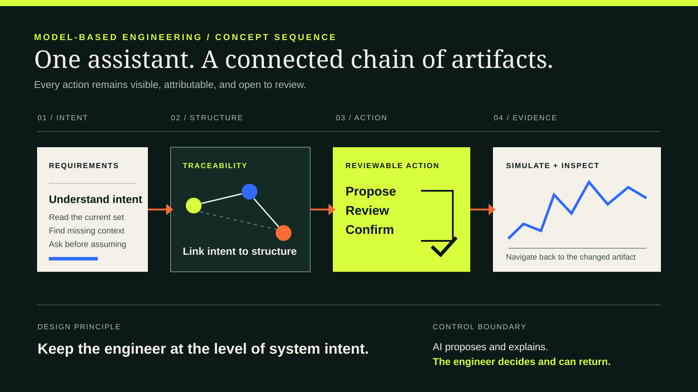
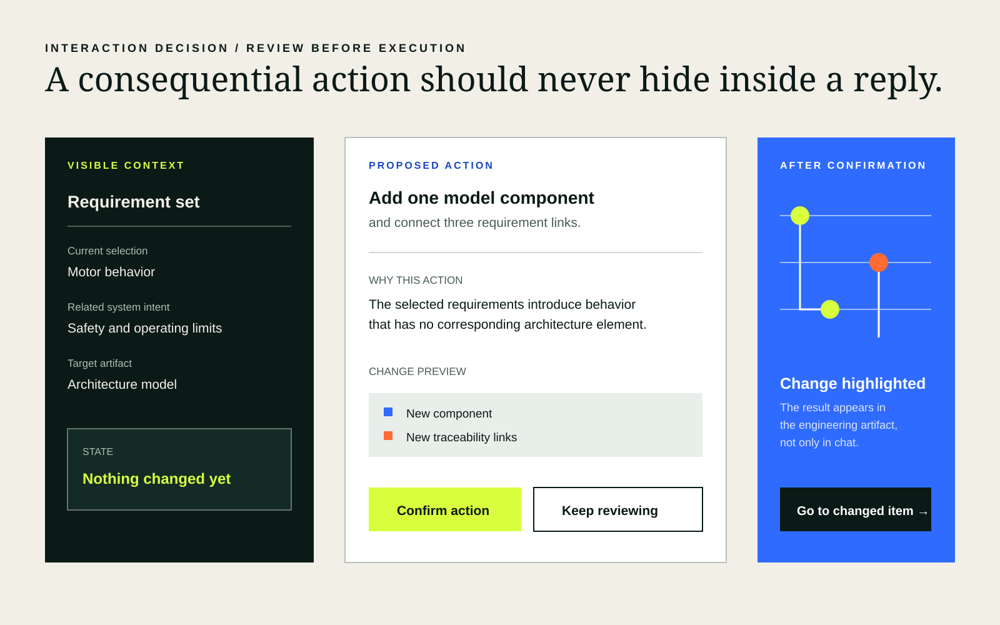
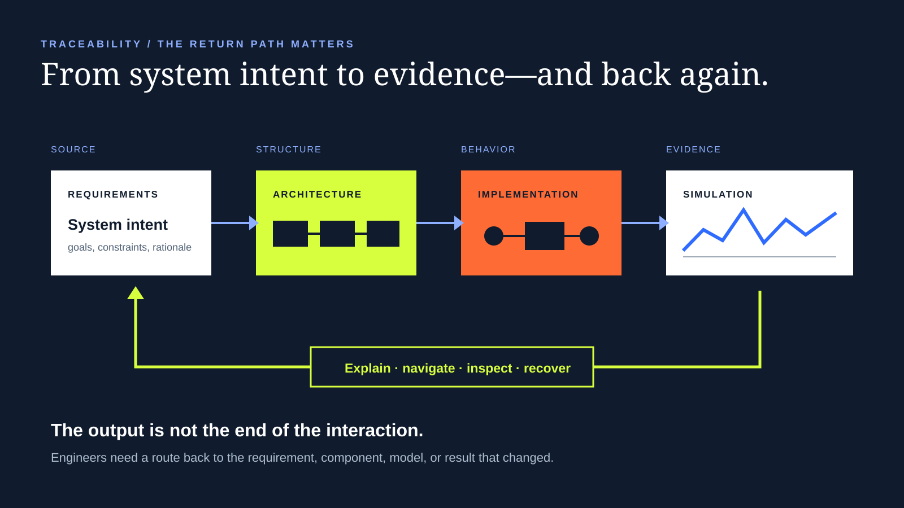

Designing an AI assistant for model-based engineering.
I led the experience vision with the Engineering Lead for an assistant that could work across requirements, architecture, implementation, simulation, and explanation—while keeping every consequential action visible and under human control.
- Company / product
- MathWorks / Simulink
- Period
- Approx. 2023–2024
- Role
- UX Lead with Engineering Lead
- Scope
- Experience vision, workflow, interaction model, customer evaluation

Model-based engineering connects requirements, architecture, executable models, simulation results, and the links between them. A useful assistant has to understand that structure and leave it more legible after acting.
Why this could not behave like generic chat.
A plausible answer is not enough when the output changes an engineering artifact. The interaction has to show which context the system used, what it proposes to change, where the change will land, and how the engineer can inspect or reverse course.
Work at the level of intent. Keep the chain of evidence.
The vision was to let engineers describe what the system should do, while the assistant helped carry that intent through structured artifacts without erasing traceability or decision authority.
Make the assistant useful across the workflow, without making the workflow opaque.
A workflow, not a feature.
The source artifacts show one connected sequence. Each step creates context for the next and a place the engineer can return to.
Understand requirements
Read the current system and stakeholder intent, surface gaps, and ask for clarification before building.
Propose traceable actions
Suggest requirement refinements, links, or model changes with the source context still visible.
Review and confirm
Keep action separate from explanation. The engineer reviews the intended change before execution.
Update architecture and implementation
Carry the confirmed intent into connected model artifacts rather than leaving it as generated prose.
Simulate and inspect
Run behavior, expose the resulting signal or scope, and keep the output tied to the model that produced it.
Explain and navigate
Explain what changed and provide a direct route back to the relevant requirement, component, model, or result.
The story is carried by working artifacts.
I reviewed the surviving concept and experiment archive for this case. The public visuals preserve the supported interaction logic while removing confidential interfaces, names, identifiers, code, and service details.
Visible movement from requirements assistance and link confirmation through architecture updates, implementation, simulation, scope inspection, explanation, and navigation.
Requirements, natural-language system descriptions, equations, and code were explored as different ways engineers might ask for model-based help.
The archive includes onboarding, history, feedback, cancellation, mobile, and localized assistant states. It is team evidence; I do not claim sole authorship of the implementation.
A surviving sprint-planning file is part of the archive. Its content and authorship remain private and are not used for substantive public claims.
Review before execution.
The assistant can explain freely. Acting on a structured artifact is a separate step: show the source, state the proposed change, wait for confirmation, make the result visible, and return the engineer to it.

Test the concept with customers, not just the technology.
We tested the AI-assistant concepts with customers through both user interviews and validation tests. That put the workflow and its interaction direction in front of the people expected to reason with it.
Evidence boundary: the surviving public-safe record supports these methods and the interaction direction evaluated. It does not support participant counts, customer identities, metrics, or measured product impact.
Trust had to be designed into the sequence.
The interaction model centered on the points where an engineer needs to understand, decide, inspect, or recover.
-
Visible context
Show which requirement, model element, or result the assistant is using. Do not make the source of an action implicit.
-
Reviewable action
Turn a generated suggestion into a legible proposed change with a target and rationale.
-
Confirmation
Ask for an explicit decision before changing a consequential engineering artifact.
-
Traceability
Keep requirements and the components that satisfy them connected as the system evolves.
-
Navigation
After acting, point back to the changed item so the engineer can inspect the actual artifact.
-
Human control and recovery
Preserve a clear boundary between proposing, acting, checking the result, and choosing the next step.
Make every output navigable.
In an expert tool, the response is not the durable output. The changed requirement, component, model, link, or simulation result is. The assistant should help the engineer reach it.

Engineers express intent in more than one language.
The experiment archive explored different starting materials. The design question was not simply “what should the prompt box say?” It was how each input becomes structured, inspectable work.
AI for expert tools is an interaction architecture problem.
This work reinforced a durable principle in my practice: usefulness comes from more than model capability. The product has to make context legible, actions bounded, consequences inspectable, and control recoverable.
The assistant should help experts think at a higher level without hiding the system they remain responsible for.